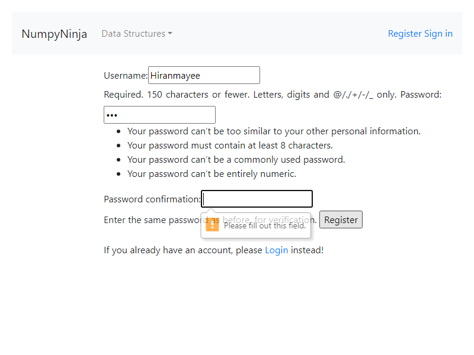
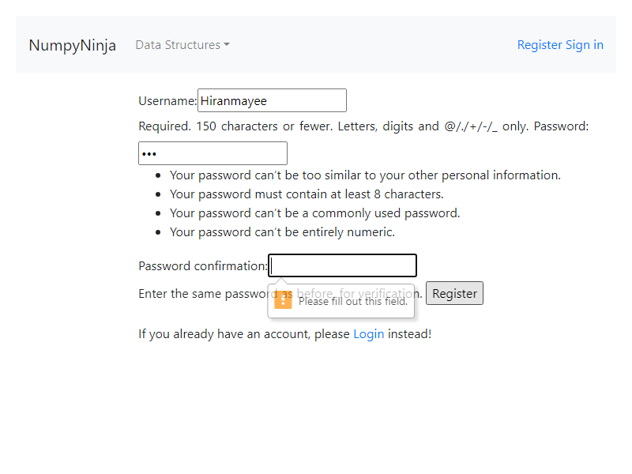

Started
Mar 5, 2024 10:26:19 PM
Ended
Mar 5, 2024 10:31:09 PM
Features Passed
5
Features Failed
1
Features
Scenarios
Steps
Timeline
Tags
| Name | Passed | Failed | Skipped | Others | Passed % |
|---|---|---|---|---|---|
| @graphpage | 14 | 0 | 0 | 0 | 100% |
| @signinpage | 1 | 0 | 0 | 0 | 100% |
| @homepage | 4 | 0 | 0 | 0 | 100% |
| @queuepage | 2 | 0 | 0 | 0 | 100% |
| @registrationpage | 5 | 3 | 0 | 0 | 62.5% |
| @stackpage | 17 | 0 | 0 | 0 | 100% |
System/Environment
| Name | Value |
|---|---|
| AppName | AutomationPractice |
| user | Pratiksha |
| build | 19045.3570 |
| os | Windows |
-
Graph page features
10:26:21 PM / 00:01:46:400 Pass
Graph page features
03.05.2024 10:26:21 PM 03.05.2024 10:28:07 PM 00:01:46:400 · #test-id=1PassGraph page urlGiven the user has already logged in the home page using for Graphusername password Pratiksha Aggarwal Given The user is on the Graph Page after logged inThen The URL of the page should contain "graph"PassGraph LinkGiven the user has already logged in the home page using for Graphusername password Pratiksha Aggarwal Given The user is on the Graph Page after logged inWhen The user clicks a "Graph" link in graphThen The user should be redirected to "graph/graph" Page in graphPassGraph LinkGiven the user has already logged in the home page using for Graphusername password Pratiksha Aggarwal Given The user is on the Graph Page after logged inWhen The user clicks a "Graph Representations" link in graphThen The user should be redirected to "graph/graph-representations" Page in graphPassThe user clicks Run on Graph Page without entering codeGiven the user has already logged in the home page using for Graphusername password Pratiksha Aggarwal Given The user is on the "graph/graph/" Page in graphAnd The user clicks Try Here button of "Graph" Page in graphAnd The user is on the "tryEditor" Page in graphWhen The user clicks "run" with code "false" in graphThen Ouput Displayed "false" in graphAnd Error message "false" in graphPassThe user clicks Run on Python Editor of Graph by enterering invalid codeGiven the user has already logged in the home page using for Graphusername password Pratiksha Aggarwal Given The user is on the "graph/graph/" Page in graphAnd The user clicks Try Here button of "Graph" Page in graphAnd The user is on the "tryEditor" Page in graphWhen The user writes "invalid" code for "2" in graphAnd The user clicks "run" with code "true" in graphThen Error message "true" in graphPassThe user clicks Run on Python Editor of Graph and entering valid codeGiven the user has already logged in the home page using for Graphusername password Pratiksha Aggarwal Given The user is on the "graph/graph/" Page in graphAnd The user clicks Try Here button of "Graph" Page in graphAnd The user is on the "tryEditor" Page in graphWhen The user writes "valid" code for "1" in graphAnd The user clicks "run" with code "true" in graphThen Ouput Displayed "true" in graphPassTry Here button of Graph in Python PageGiven the user has already logged in the home page using for Graphusername password Pratiksha Aggarwal Given The user is on the "graph/graph/" Page in graphWhen The user clicks Try Here button of "Graph" Page in graphThen The user should be redirected to "https://dsportalapp.herokuapp.com/tryEditor" Page in graphAnd The Page should have Python Editor in graphPassThe user clicks Run on Graph Representations Page without entering codeGiven the user has already logged in the home page using for Graphusername password Pratiksha Aggarwal Given The user is on the "graph/graph-representations/" Page in graphAnd The user clicks Try Here button of "Graph Representations" Page in graphAnd The user is on the "tryEditor" Page in graphWhen The user clicks "run" with code "false" in graphThen Ouput Displayed "false" in graphAnd Error message "false" in graphPassThe user clicks Run on Python Editor of Graph Representations Page by enterering invalid codeGiven the user has already logged in the home page using for Graphusername password Pratiksha Aggarwal Given The user is on the "graph/graph-representations/" Page in graphAnd The user clicks Try Here button of "Graph Representations" Page in graphAnd The user is on the "tryEditor" Page in graphWhen The user writes "invalid" code for "2" in graphAnd The user clicks "run" with code "true" in graphThen Error message "true" in graphPassThe user clicks Run on Python Editor of Graph Representations Page and entering valid codeGiven the user has already logged in the home page using for Graphusername password Pratiksha Aggarwal Given The user is on the "graph/graph-representations/" Page in graphAnd The user clicks Try Here button of "Graph Representations" Page in graphAnd The user is on the "tryEditor" Page in graphWhen The user writes "valid" code for "2" in graphAnd The user clicks "run" with code "true" in graphThen Ouput Displayed "true" in graphPassTry Here button of Graph Representations in Python PageGiven the user has already logged in the home page using for Graphusername password Pratiksha Aggarwal Given The user is on the "graph/graph-representations/" Page in graphWhen The user clicks Try Here button of "Graph Representations" Page in graphThen The user should be redirected to "https://dsportalapp.herokuapp.com/tryEditor" Page in graphAnd The Page should have Python Editor in graphPassPractice question page with linksGiven the user has already logged in the home page using for Graphusername password Pratiksha Aggarwal Given The user is on the "graph/graph/" Page in graphWhen The user clicks a "Practice Questions" link in graphThen The user should be redirected to "graph/practice" Page in graphPassAlert of Graph Page by enterering invalid codeGiven the user has already logged in the home page using for Graphusername password Pratiksha Aggarwal Given The user is on the "graph/graph/" Page in graphAnd The user clicks Try Here button of "Graph" Page in graphAnd The user is on the "tryEditor" Page in graphWhen The user writes "invalid" code for "2" in graphAnd The user clicks "run" with code "true" in graphAnd Error message "true" in graphAnd The user clicks ok on alertThen The user is on the "graph/graph/" Page in graphAnd The user clicks Try Here button of "Graph" Page in graphAnd The user is on the "tryEditor" Page in graphAnd No change in codePassAlert of Graph Representations Page by enterering invalid codeGiven the user has already logged in the home page using for Graphusername password Pratiksha Aggarwal Given The user is on the "graph/graph-representations/" Page in graphAnd The user clicks Try Here button of "Graph Representations" Page in graphAnd The user is on the "tryEditor" Page in graphWhen The user writes "invalid" code for "2" in graphAnd The user clicks "run" with code "true" in graphAnd Error message "true" in graphAnd The user clicks ok on alertThen The user is on the "graph/graph-representations/" Page in graphAnd The user clicks Try Here button of "Graph Representations" Page in graphAnd The user is on the "tryEditor" Page in graphAnd No change in code -
Home Page Features
10:28:07 PM / 00:00:15:508 Pass
Home Page Features
03.05.2024 10:28:07 PM 03.05.2024 10:28:23 PM 00:00:15:508 · #test-id=163PassThe user clicks get started button on DS Algo PortalGiven The user opens DS Algo portal linkWhen The user clicks the Get Started buttonThen The URL of the page should contain "home"And The user should see 6 panes with different data structiresAnd Register Link is displayedAnd Sign In Link is displayedPassThe user clicks Get Started without loggin inGiven The user opens Home Page without loggin inWhen The user clicks any of the Get Started buttons below the data structuresThen It should alert the user with a message You are not logged inPassThe user selects any data structures item from the drop down without loggin inGiven The user opens Home Page without loggin inWhen The user selects any data structures item from the drop down menuThen It should alert the user with a message You are not logged inPassThe user clicks sign in buttonGiven The user opens Home Page without loggin inWhen The user clicks Sign inThen The user should be redirected to Sign in pageAnd The URL of the page should contain "login" -
Queue page features
10:28:23 PM / 00:00:09:053 Pass
Queue page features
03.05.2024 10:28:23 PM 03.05.2024 10:28:32 PM 00:00:09:053 · #test-id=200PassQueue page urlGiven The user has already logged in the home page usingusername password Pratiksha Aggarwal Given The user is on the Queue Page after logged inThen The URL of the page should contain "queue"PassQueue page check links for topics coveredGiven The user has already logged in the home page usingusername password Pratiksha Aggarwal Given The user is on the Queue Page after logged inThen user gets the following links to explore Queue pageImplementation of Queue in Python Implementation using collections.deque Implementation using array Queue Operations And The count of the links should be 4 -
Register Page Features
10:28:32 PM / 00:00:41:399 Fail
Register Page Features
03.05.2024 10:28:32 PM 03.05.2024 10:29:13 PM 00:00:41:399 · #test-id=218PassAlll fields empty. Username ErrorGiven The User has clicked on the "register" button from the home page for registerGiven The user is on the new user registration pageWhen The user clicks "register"Then The error "Please fill out this field." appears below "uName"PassArray page urlGiven The User has clicked on the "register" button from the home page for registerGiven The user is on the new user registration pageWhen The user fills "uName" with "Hiranmayee"And The user clicks "register"Then The error "Please fill out this field." appears below "password"PassArray page urlGiven The User has clicked on the "register" button from the home page for registerGiven The user is on the new user registration pageWhen The user fills "uName" with "Hiranmayee"And The user fills "password" with "Nidugondi"And The user clicks "register"Then The error "Please fill out this field." appears below "pwdConfirm"FailArray page urlGiven The User has clicked on the "register" button from the home page for registerGiven The user is on the new user registration pageWhen The user fills "uName" with "Hiranmayee "And The user clicks "register"Then The error "invalid data" appears below "uName"AppHooks.ApplicationHooks.tearDown(io.cucumber.java.Scenario)Array_page_url FailArray page urlGiven The User has clicked on the "register" button from the home page for registerGiven The user is on the new user registration pageWhen The user fills "uName" with "Hiranmayee"And The user fills "password" with "Nidugondi "And The user clicks "register"Then The error "invalid data" appears below "password"AppHooks.ApplicationHooks.tearDown(io.cucumber.java.Scenario)Array_page_url
FailArray page urlGiven The User has clicked on the "register" button from the home page for registerGiven The user is on the new user registration pageWhen The user fills "uName" with "Hiranmayee"And The user fills "password" with "Nidugondi "And The user clicks "register"Then The error "invalid data" appears below "password"AppHooks.ApplicationHooks.tearDown(io.cucumber.java.Scenario)Array_page_url FailArray page urlGiven The User has clicked on the "register" button from the home page for registerGiven The user is on the new user registration pageWhen The user fills "uName" with "Hiranmayee"And The user fills "password" with "Nid"And The user clicks "register"Then The error "invalid data" appears below "password"AppHooks.ApplicationHooks.tearDown(io.cucumber.java.Scenario)Array_page_urlPassArray page urlGiven The User has clicked on the "register" button from the home page for registerGiven The user is on the new user registration pageWhen The user fills "uName" with "Hiranmayee"And The user fills "password" with "Nidugondi"And The user fills "pwdConfirm" with "Nidugondi123"And The user clicks "register"Then The "warning" message "password_mismatch:The two password fields didnt match." appearsPassArray page urlGiven The User has clicked on the "register" button from the home page for registerGiven The user is on the new user registration pageWhen The user fills "uName" with "random"And The user fills "password" with "Nidugondi"And The user fills "pwdConfirm" with "Nidugondi"And The user clicks "register"Then The "signIn" message "New Account Created. You are logged in as" appearsAnd The URL of the page should contain "home"
FailArray page urlGiven The User has clicked on the "register" button from the home page for registerGiven The user is on the new user registration pageWhen The user fills "uName" with "Hiranmayee"And The user fills "password" with "Nid"And The user clicks "register"Then The error "invalid data" appears below "password"AppHooks.ApplicationHooks.tearDown(io.cucumber.java.Scenario)Array_page_urlPassArray page urlGiven The User has clicked on the "register" button from the home page for registerGiven The user is on the new user registration pageWhen The user fills "uName" with "Hiranmayee"And The user fills "password" with "Nidugondi"And The user fills "pwdConfirm" with "Nidugondi123"And The user clicks "register"Then The "warning" message "password_mismatch:The two password fields didnt match." appearsPassArray page urlGiven The User has clicked on the "register" button from the home page for registerGiven The user is on the new user registration pageWhen The user fills "uName" with "random"And The user fills "password" with "Nidugondi"And The user fills "pwdConfirm" with "Nidugondi"And The user clicks "register"Then The "signIn" message "New Account Created. You are logged in as" appearsAnd The URL of the page should contain "home" -
Sign In Page Features
10:29:13 PM / 00:00:06:044 Pass
Sign In Page Features
03.05.2024 10:29:13 PM 03.05.2024 10:29:19 PM 00:00:06:044 · #test-id=306PassLogging in with correct credentialsGiven The User has clicked on the "signin" button from the home pageGiven The user is in the Sign In pageWhen User eneters the username "Pratiksha"And The user eneters the password as "Aggarwal"And user clicks on login buttonAnd The user is alerted with message that "You are logged in"And Sign Out link is displayedAnd The URL of the page should contain "home" -
Stack page features
10:29:19 PM / 00:01:49:292 Pass
Stack page features
03.05.2024 10:29:19 PM 03.05.2024 10:31:09 PM 00:01:49:292 · #test-id=320PassStack page urlGiven The user has already logged in the home page using stackusername password Pratiksha Aggarwal Given The user is on the Stack Page after logged inThen The URL of the page should contain "stack"PassThe user is in the "Operations in Stack" pageGiven The user has already logged in the home page using stackusername password Pratiksha Aggarwal Given The user clicks Operations in Stack buttonThen The URL of the page should contain "operations-in-stack"PassOperation in Stack: The user clicks Try Here buttonGiven The user has already logged in the home page using stackusername password Pratiksha Aggarwal Given The user is in the Operations in Stack pageWhen The user clicks Try Here buttonThen The user should be redirected to a page having an tryEditor with a Run button to testPassOperation in Stack: The user is on the tryEditor page writes Valid python codeGiven The user has already logged in the home page using stackusername password Pratiksha Aggarwal Given The user is on the tryEditor page of Operations in Stack pageWhen The User writes Valid python codeAnd click run buttonThen User is able to see the output in consolePassOperation in Stack: The user is on the tryEditor page writes InValid python codeGiven The user has already logged in the home page using stackusername password Pratiksha Aggarwal Given The user is on the tryEditor page of Operations in Stack pageWhen The User writes InValid python codeAnd click run buttonThen User is able to see the error msg in pop up windowPassOperation in Stack: The user is on the editor page withAlert error message and click the ok button in the alert windowGiven The user has already logged in the home page using stackusername password Pratiksha Aggarwal Given The user is on the editor page withAlert error messageWhen The user click the ok button in the alert windowThen The user is on the same page having Editor and Run buttonPassImplementation: The user is in the "Implementaion" pageGiven The user has already logged in the home page using stackusername password Pratiksha Aggarwal Given The user is on the Stack Page after logged inWhen The user clicksbutton Then The URL of the page should contain "implementation"PassImplementation: The clicks user try here button in the Implementation pageGiven The user has already logged in the home page using stackusername password Pratiksha Aggarwal Given The user is in the Implementation pageWhen The user clicks Try Here buttonThen The user is on the same page having Editor and Run buttonPassImplementation:User writes Valid python code in tryEditor of Implementation pageGiven The user has already logged in the home page using stackusername password Pratiksha Aggarwal Given The user is on the tryEditor screen of Implementation pageWhen The User writes Valid python code in Implementation pageAnd click run buttonThen User is able to see the output in consolePassImplementation:User writes InValid python code in tryEditor of Implementation pageGiven The user has already logged in the home page using stackusername password Pratiksha Aggarwal Given The user is on the tryEditor screen of Implementation pageWhen The User writes InValid python code in Implementation pageAnd click run buttonThen User is able to see the error msg in pop up windowPassImplementation: The user is on the editor page withAlert error message and click the ok button in the alert windowGiven The user has already logged in the home page using stackusername password Pratiksha Aggarwal Given The user is on the editor page of Implementation with Alert error messageWhen The user click the ok button in the alert windowThen The user is on the same page having Editor and Run buttonPassApplications: The user is in the "Applications" pageGiven The user has already logged in the home page using stackusername password Pratiksha Aggarwal Given The user is on the Stack Page after logged inWhen The user clicksbutton Then The URL of the page should contain "stack-applications"PassApplications: The clicks user try here button in the Applications pageGiven The user has already logged in the home page using stackusername password Pratiksha Aggarwal Given The user is in the Applications pageWhen The user clicks Try Here buttonThen The user is on the same page having Editor and Run buttonPassApplications: User writes Valid python code in tryEditor of Implementation pageGiven The user has already logged in the home page using stackusername password Pratiksha Aggarwal Given The user is on the tryEditor screen of Applications pageWhen The User writes Valid python code in Applications pageAnd click run buttonThen User is able to see the output in consolePassApplications:User writes InValid python code in tryEditor of Applications pageGiven The user has already logged in the home page using stackusername password Pratiksha Aggarwal Given The user is on the tryEditor screen of Applications pageWhen The User writes InValid python code in Applications pageAnd click run buttonThen User is able to see the error msg in pop up windowPassApplications: The user is on the editor page withAlert error message and click the ok button in the alert windowGiven The user has already logged in the home page using stackusername password Pratiksha Aggarwal Given The user is on the editor page of Application with Alert error messageWhen The user click the ok button in the alert windowThen The user is on the same page having Editor and Run buttonPassPractice Questions: The user is in the "Practice Questions" pageGiven The user has already logged in the home page using stackusername password Pratiksha Aggarwal Given The user is on the Stack Page after logged inWhen The user clicksbutton Then The URL of the page should contain "practice"
-
@graphpage
14 tests
@graphpage
14 passedStatus Timestamp TestName Pass 22:26:21 PM Graph page url Graph page features.Graph page urlPass 22:26:28 PM Graph Link Graph page features.Graph LinkPass 22:26:33 PM Graph Link Graph page features.Graph LinkPass 22:26:37 PM The user clicks Run on Graph Page without entering code Graph page features.The user clicks Run on Graph Page without entering codePass 22:26:43 PM The user clicks Run on Python Editor of Graph by enterering invalid code Graph page features.The user clicks Run on Python Editor of Graph by enterering invalid codePass 22:26:50 PM The user clicks Run on Python Editor of Graph and entering valid code Graph page features.The user clicks Run on Python Editor of Graph and entering valid codePass 22:27:10 PM Try Here button of Graph in Python Page Graph page features.Try Here button of Graph in Python PagePass 22:27:16 PM The user clicks Run on Graph Representations Page without entering code Graph page features.The user clicks Run on Graph Representations Page without entering codePass 22:27:23 PM The user clicks Run on Python Editor of Graph Representations Page by enterering invalid code Graph page features.The user clicks Run on Python Editor of Graph Representations Page by enterering invalid codePass 22:27:31 PM The user clicks Run on Python Editor of Graph Representations Page and entering valid code Graph page features.The user clicks Run on Python Editor of Graph Representations Page and entering valid codePass 22:27:39 PM Try Here button of Graph Representations in Python Page Graph page features.Try Here button of Graph Representations in Python PagePass 22:27:45 PM Practice question page with links Graph page features.Practice question page with linksPass 22:27:50 PM Alert of Graph Page by enterering invalid code Graph page features.Alert of Graph Page by enterering invalid codePass 22:27:59 PM Alert of Graph Representations Page by enterering invalid code Graph page features.Alert of Graph Representations Page by enterering invalid code -
@signinpage
1 tests
@signinpage
1 passedStatus Timestamp TestName Pass 22:29:13 PM Logging in with correct credentials Sign In Page Features.Logging in with correct credentials -
@homepage
4 tests
@homepage
4 passedStatus Timestamp TestName Pass 22:28:07 PM The user clicks get started button on DS Algo Portal Home Page Features.The user clicks get started button on DS Algo PortalPass 22:28:11 PM The user clicks Get Started without loggin in Home Page Features.The user clicks Get Started without loggin inPass 22:28:15 PM The user selects any data structures item from the drop down without loggin in Home Page Features.The user selects any data structures item from the drop down without loggin inPass 22:28:19 PM The user clicks sign in button Home Page Features.The user clicks sign in button -
@queuepage
2 tests
@queuepage
2 passedStatus Timestamp TestName Pass 22:28:23 PM Queue page url Queue page features.Queue page urlPass 22:28:27 PM Queue page check links for topics covered Queue page features.Queue page check links for topics covered -
@registrationpage
8 tests
@registrationpage
5 passed 3 failedStatus Timestamp TestName Pass 22:28:32 PM Alll fields empty. Username Error Register Page Features.Alll fields empty. Username ErrorPass 22:28:36 PM Array page url Register Page Features.Array page urlPass 22:28:40 PM Array page url Register Page Features.Array page urlFail 22:28:45 PM Array page url Register Page Features.Array page urlFail 22:28:49 PM Array page url Register Page Features.Array page urlFail 22:28:55 PM Array page url Register Page Features.Array page urlPass 22:29:02 PM Array page url Register Page Features.Array page urlPass 22:29:07 PM Array page url Register Page Features.Array page url -
@stackpage
17 tests
@stackpage
17 passedStatus Timestamp TestName Pass 22:29:19 PM Stack page url Stack page features.Stack page urlPass 22:29:24 PM The user is in the "Operations in Stack" page Stack page features.The user is in the "Operations in Stack" pagePass 22:29:30 PM Operation in Stack: The user clicks Try Here button Stack page features.Operation in Stack: The user clicks Try Here buttonPass 22:29:36 PM Operation in Stack: The user is on the tryEditor page writes Valid python code Stack page features.Operation in Stack: The user is on the tryEditor page writes Valid python codePass 22:29:43 PM Operation in Stack: The user is on the tryEditor page writes InValid python code Stack page features.Operation in Stack: The user is on the tryEditor page writes InValid python codePass 22:29:52 PM Operation in Stack: The user is on the editor page withAlert error message and click the ok button in the alert window Stack page features.Operation in Stack: The user is on the editor page withAlert error message and click the ok button in the alert windowPass 22:29:59 PM Implementation: The user is in the "Implementaion" page Stack page features.Implementation: The user is in the "Implementaion" pagePass 22:30:04 PM Implementation: The clicks user try here button in the Implementation page Stack page features.Implementation: The clicks user try here button in the Implementation pagePass 22:30:10 PM Implementation:User writes Valid python code in tryEditor of Implementation page Stack page features.Implementation:User writes Valid python code in tryEditor of Implementation pagePass 22:30:16 PM Implementation:User writes InValid python code in tryEditor of Implementation page Stack page features.Implementation:User writes InValid python code in tryEditor of Implementation pagePass 22:30:23 PM Implementation: The user is on the editor page withAlert error message and click the ok button in the alert window Stack page features.Implementation: The user is on the editor page withAlert error message and click the ok button in the alert windowPass 22:30:29 PM Applications: The user is in the "Applications" page Stack page features.Applications: The user is in the "Applications" pagePass 22:30:35 PM Applications: The clicks user try here button in the Applications page Stack page features.Applications: The clicks user try here button in the Applications pagePass 22:30:41 PM Applications: User writes Valid python code in tryEditor of Implementation page Stack page features.Applications: User writes Valid python code in tryEditor of Implementation pagePass 22:30:48 PM Applications:User writes InValid python code in tryEditor of Applications page Stack page features.Applications:User writes InValid python code in tryEditor of Applications pagePass 22:30:54 PM Applications: The user is on the editor page withAlert error message and click the ok button in the alert window Stack page features.Applications: The user is on the editor page withAlert error message and click the ok button in the alert windowPass 22:31:01 PM Practice Questions: The user is in the "Practice Questions" page Stack page features.Practice Questions: The user is in the "Practice Questions" page
-
java.lang.AssertionError
3 tests
java.lang.AssertionError
3 failedStatus Timestamp TestName Fail 22:28:49 PM Then The error "invalid data" appears below "uName" Register Page Features.Array page url.Then The error "invalid data" appears below "uName"Fail 22:28:54 PM Then The error "invalid data" appears below "password" Register Page Features.Array page url.Then The error "invalid data" appears below "password"Fail 22:29:01 PM Then The error "invalid data" appears below "password" Register Page Features.Array page url.Then The error "invalid data" appears below "password"